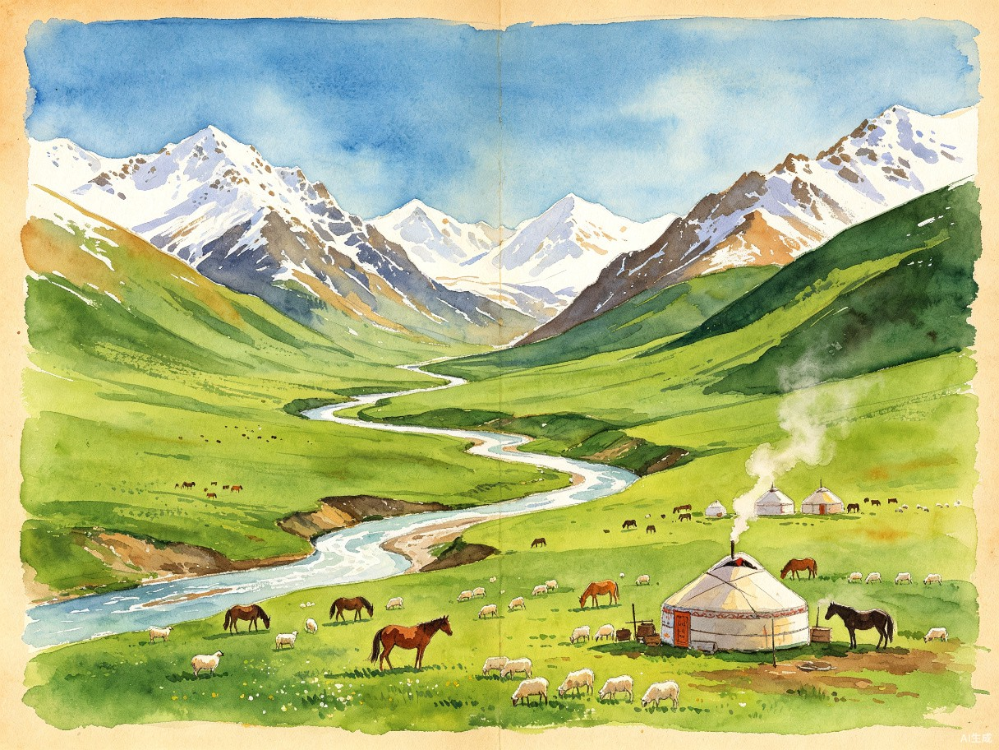

PLAN C · 深度草原版
新疆伊犁环线
自驾手帐
赛里木湖星空营地 · 果子沟 · 伊宁 · 那拉提 · 独库公路
2026.08.02(日) — 08.07(五) ｜ 6天5晚 ｜ 乌鲁木齐起止
1,500
总里程 km
6
天
1
晚星空营地
15h+
日照时长
路线总览
Ili Loop · Deep Grassland Edition
D2/D5 长途驾驶+独库公路
D3 赛湖→果子沟→伊宁
D4 伊宁→那拉提
主要停靠点
方案C路线：D1在乌鲁木齐休整，D2长途直达赛里木湖并住星空营地（看日落+星空+晨雾），D3经果子沟至伊宁速览，D4深度游那拉提草原，D5北穿独库公路返回乌鲁木齐，D6返程。
逐日行程
Day by Day Journal
14:00
到达乌鲁木齐地窝堡国际机场，取行李。8月旺季机场人流量大，建议提前在租车APP（神州/一嗨）上完成选车、上传驾照、支付，到达后直接取钥匙，避免现场排队办手续
14:30
机场租车中心取车。强烈建议预订SUV（通过性好，独库公路弯多路窄）。取车时检查轮胎（含备胎）、刹车、灯光，拍照留证
15:00
入住酒店（建议市中心红山/友好路或机场附近），放行李休整。乌鲁木齐暑期免费开放15378个泊位、248处停车场，停车方便
15:30
国际大巴扎：世界上最大的巴扎（集市），伊斯兰建筑风格，免费入场（需身份证过安检）。下午4-5点光线最好，民族歌舞表演多。可购买干果、丝巾、手工艺品。丝绸之路塔登顶50元，建议上去俯瞰
17:30
红山公园：乌鲁木齐地标，免费入园。爬10分钟到红山塔，拍乌鲁木齐全景告别照
19:00
晚餐：领馆巷美食街。艾力江和田馕坑肉、烤包子、羊肉串、手抓饭一站吃全，人均30-50元
21:00
回酒店，采购明天路上的物资：一箱矿泉水、零食、巧克力。检查离线地图是否下载好。今晚必须早睡，明天是全程最长驾驶日550km！
为什么不在到达当天出发赶路？
① 方案C的D2是全程最长驾驶日（550km），到达当天如果直接开长途容易疲劳驾驶
② 8月2日是周日，次日（周一）出发正好避开周末客流高峰
③ 到达当天需要取车、采购物资、适应时差，不宜赶路
④ 下午半天逛大巴扎+红山公园+领馆巷吃饭，行程饱满不浪费
① 方案C的D2是全程最长驾驶日（550km），到达当天如果直接开长途容易疲劳驾驶
② 8月2日是周日，次日（周一）出发正好避开周末客流高峰
③ 到达当天需要取车、采购物资、适应时差，不宜赶路
④ 下午半天逛大巴扎+红山公园+领馆巷吃饭，行程饱满不浪费
住宿
乌鲁木齐市中心 200-350元/晚
大巴扎
免费 · 商户约10:00-22:00营业
明日重点
全程最长驾驶日 550km
出发时间
明日 07:00 准时出发
今日美食推荐 · 领馆巷
- 馕坑肉：整块肉在馕坑中烤制，外焦里嫩
- 烤包子：馕坑烤制，外酥里嫩，肉香扑鼻
- 烤羊肉串：正宗新疆烤法，领馆巷最集中
- 手抓饭：羊肉、胡萝卜、洋葱与大米同焖

Sayram Lake · 大西洋最后一滴眼泪
07:00
早餐后准时出发！沿G30连霍高速一路向西。经石河子、奎屯、精河，全程高速路况优良。这是全程最长驾驶日，必须早出发
10:00
途中在奎屯或精河服务区休整，加油。油表剩1/3就开始找加油站，不要等亮灯。加油需身份证+人脸识别
12:00
服务区午餐，休整继续西行。沿途戈壁风光逐渐变为绿洲
14:00
到达赛里木湖东门，扫码入园。门票70元+自驾票75元=145元/人。提前在"赛里木湖旅游"公众号预约自驾票，现场直接扫码入园。8月3日周一工作日，日均1.5-2.5万人，停车自由
14:30 - 18:30
顺时针自驾环湖（约90km，4小时）
东门进 → 松树头（先爬上去看果子沟大桥全景，趁人少先上去！11点后停车场满位）→ 克勒涌珠（看天鹅）→ 点将台（俯瞰湖全景）→ 西海草原（最美一段，野花+蓝湖）→ 网红S弯（航拍机位）→ 北门出
顺时针优势：拍照顺光、比较好停车、避开逆时针旅行团主流向
东门进 → 松树头（先爬上去看果子沟大桥全景，趁人少先上去！11点后停车场满位）→ 克勒涌珠（看天鹅）→ 点将台（俯瞰湖全景）→ 西海草原（最美一段，野花+蓝湖）→ 网红S弯（航拍机位）→ 北门出
顺时针优势：拍照顺光、比较好停车、避开逆时针旅行团主流向
19:00
环湖结束，入住赛里木湖星空营地（600-1200元/晚）或博乐市酒店（200-350元/晚）。营地有哈萨克简餐，简单晚餐
20:30
傍晚看日落（约21:50日落）。赛里木湖日落是全新疆最美的日落之一，夕阳将湖面染成金色，雪山倒影涌动。住湖边才能完整体验这一刻
22:30
夜晚看星空（住湖边独家福利！）。赛里木湖无光污染，银河清晰可见，是新疆最佳观星地之一。这就是方案C的核心价值——用一天长途换来的独家体验
赛里木湖避堵全攻略：
① 顺时针环湖：东门→松树头→西海草原→北门→东门出。拍照顺光，避开逆时针车流
② 先去松树头：11点后停车场满位，一个车位都找不到！趁早爬上去看果子沟大桥
③ 选工作日：8/3周一日均1.5-2.5万人，停车自由；周末暴增，环湖车速不超20码
④ 提前在"赛里木湖旅游"公众号预约自驾票，到现场直接扫码入园
⑤ 导航不要搜"赛里木湖景区"，搜"赛里木湖东门"精准定位
① 顺时针环湖：东门→松树头→西海草原→北门→东门出。拍照顺光，避开逆时针车流
② 先去松树头：11点后停车场满位，一个车位都找不到！趁早爬上去看果子沟大桥
③ 选工作日：8/3周一日均1.5-2.5万人，停车自由；周末暴增，环湖车速不超20码
④ 提前在"赛里木湖旅游"公众号预约自驾票，到现场直接扫码入园
⑤ 导航不要搜"赛里木湖景区"，搜"赛里木湖东门"精准定位
赛里木湖海拔约2070米，湖边风力极强，体感温度比市区低8°C以上。务必穿冲锋衣或厚外套，即使是8月盛夏。紫外线极强，防晒霜+墨镜+帽子缺一不可。晨看星空需注意保暖，夜间湖边温度可降至10°C以下。景区内无加油站和充电桩，进入前确保油量充足。
门票
门票70元 + 自驾票75元 = 145元/人
住宿（推荐）
赛湖星空营地 600-1200元/晚
住宿（经济）
博乐市 200-350元/晚
环湖方向
顺时针 · 东门进北门出
今日美食推荐
- 手抓肉：清炖羊肉，原汁原味，赛里木湖周边哈萨克牧民家有售
- 酸奶/酸奶刨冰：手工酸奶配刨冰+砂糖，消暑佳品
- 营地简餐：星空营地提供哈萨克餐、红茶、牛肉干，简单但有味道
- 牛肉干：牧区特产，厚实有嚼劲，适合夜间观星时充饥
06:30
清晨晨雾（住湖边的独家福利！）。日出约6:30，湖面升起薄薄晨雾，雪山倒影在镜面般湖面上清晰可见。这是不住湖边的人永远看不到的景色——方案C的核心价值所在
07:30
晨光中再次欣赏湖光山色，拍完晨雾照后退房。营地简早餐
08:30
离开赛里木湖，向南行驶。果子沟大桥观景——出赛里木湖即上果子沟大桥，中国最美高速桥梁之一，双塔斜拉桥横跨峡谷，雪山为背景，极为壮观。路边有观景台可停车拍照
10:00
沿高速前行，经清水河→伊宁（约180km，2.5h）。沿途山谷风光壮丽
12:30
到达伊宁市，入住酒店，午餐
14:00
喀赞其民俗旅游区速览（方案C牺牲伊宁深度游览，仅半天）。伊宁最迷人的蓝色房屋聚落。维吾尔族手工艺、马车（哈迪克）、手工冰淇淋。巷子里随手一拍就是大片
17:00
离开喀赞其，简单休整。今天只是速览，明天要在那拉提全天深度游，保留体力
19:00
晚餐：喀赞其内维吾尔族餐厅。抓饭、烤包子、手工冰淇淋（必尝）
21:00
伊犁河大桥看日落。8月初日落约21:50，伊犁河谷落日极美
为什么方案C选择住赛湖而不是住清水河？
① 晨雾是住湖边的独家福利：不住湖边的人永远看不到清晨升起的薄雾和雪山倒影
② 星空是无光污染的独家体验：赛里木湖远离城市，银河清晰可见
③ 日落是全新疆最美的之一：夕阳将湖面染成金色，雪山倒影涌动
④ 代价是D2 550km长途驾驶，但用一天长途换来的沉浸体验物超所值
⑤ 预算有限可住博乐市（200-350元），但会失去晨雾和星空体验
① 晨雾是住湖边的独家福利：不住湖边的人永远看不到清晨升起的薄雾和雪山倒影
② 星空是无光污染的独家体验：赛里木湖远离城市，银河清晰可见
③ 日落是全新疆最美的之一：夕阳将湖面染成金色，雪山倒影涌动
④ 代价是D2 550km长途驾驶，但用一天长途换来的沉浸体验物超所值
⑤ 预算有限可住博乐市（200-350元），但会失去晨雾和星空体验
伊宁仅安排半天速览！方案C的策略是牺牲伊宁深度游览（仅喀赞其半天），换取赛湖和那拉提沉浸体验。如果对伊宁文化有深度兴趣，建议另行安排。明天那拉提全天深度游需要充沛体力，今晚早睡。
路况
高速为主，路况优良
住宿
伊宁市 200-350元/晚
果子沟大桥
免费观景 · 路边停车拍照
明日重点
那拉提全天深度游
今日美食推荐
- 抓饭：伊宁维吾尔族餐厅，羊肉胡萝卜洋葱焖饭
- 手工冰淇淋：喀赞其内现做，奶味浓郁，必尝
- 面肺子/米肠子：伊犁特色街头小吃，口感独特
- 烤包子：馕坑烤制，外酥里嫩，肉香扑鼻

Nalati · 空中草原 · 神的花园
08:00
早餐后出发，沿G218/G316向东南行驶。经墩麻扎→则克台→那拉提，沿途巩乃斯河谷风光渐入佳境。今天在伊宁加满油——那拉提到独库之间补给点少
12:30
到达那拉提镇，午餐。镇上餐馆以哈萨克风味为主
13:30
入住酒店，短暂休息。导航搜"那拉提空中草原自驾入口"，不要搜"主集散中心"（否则苦等区间车）。自驾票线上抢每日定点放票，提前在"游新疆"小程序购买
14:30
空中草原（门票95元+区间车60元，合计约155元，有效期2天）。海拔2200m，三面雪山环抱，巩乃斯河穿流而过。可骑马体验（约100-200元/小时）。方案C独家安排：空中草原+河谷草原两条线路都走
16:00
河谷草原（方案C独家深度游）。海拔较低，水草丰茂，牛羊成群，是徒步和拍照的绝佳场所。与空中草原的开阔壮丽形成鲜明对比
18:00
回镇上休息，避开下午暴晒时段。简单晚餐补充体力
20:00
傍晚8-9点再次进入空中草原——这是全天人最少的时段！夕阳下的空中草原金光漫洒，雪山泛粉，是全天最美的时刻。光线柔和拍照最佳
21:30
草原日落（约21:00落日），看完日落返回镇上
22:00
晚餐：哈萨克手抓肉、奶茶、马奶子。草原帐篷餐厅体验原汁原味的牧区风味
那拉提全天深度游避堵攻略（方案C独家）：
① 导航搜"那拉提空中草原自驾入口"，不要搜"那拉提景区"或"主集散中心"——后者只能苦等区间车
② 空中草原+河谷草原两条线路都走：下午2点空中草原，4点河谷草原，傍晚20点再进空中草原拍日落
③ 傍晚8-9点去人最少：下午16:00后禁止上山，但傍晚重新开放，此时旅行团已撤，体验最佳
④ 自驾票线上抢每日定点放票，提前在"游新疆"小程序购买
⑤ 注意下午16:00后禁止上山，合理安排时间
① 导航搜"那拉提空中草原自驾入口"，不要搜"那拉提景区"或"主集散中心"——后者只能苦等区间车
② 空中草原+河谷草原两条线路都走：下午2点空中草原，4点河谷草原，傍晚20点再进空中草原拍日落
③ 傍晚8-9点去人最少：下午16:00后禁止上山，但傍晚重新开放，此时旅行团已撤，体验最佳
④ 自驾票线上抢每日定点放票，提前在"游新疆"小程序购买
⑤ 注意下午16:00后禁止上山，合理安排时间
独库公路预约提醒（今晚必做！）
明天（8/6周四）走独库公路北段，必须提前1-7天通过"游新疆一码游"小程序或"新疆交警"微信公众号免费预约。务必预约8:00-10:00时段（全天最顺畅），避开10-14点最堵时段。每时段约1200辆名额，旺季热门时段提前3天可能抢空。未预约行驶罚款200元、记1分。今晚就预约！
明天（8/6周四）走独库公路北段，必须提前1-7天通过"游新疆一码游"小程序或"新疆交警"微信公众号免费预约。务必预约8:00-10:00时段（全天最顺畅），避开10-14点最堵时段。每时段约1200辆名额，旺季热门时段提前3天可能抢空。未预约行驶罚款200元、记1分。今晚就预约！
门票
门票95元 + 区间车60元 ≈ 155元
住宿
那拉提镇 200-350元/晚
骑马
约 100-200元/小时
海拔
空中草原约 2200m
今日美食推荐
- 手抓肉：清炖羊肉配皮牙子（洋葱），草原上的硬菜
- 哈萨克奶茶：咸味砖茶加奶，配馕和黄油
- 马奶子：微酸微醺的发酵马奶，草原限定
- 风干肉：牛肉风干后炒制，嚼劲十足

Duku Highway · 一天经历四季
06:30
早起，退房出发。油箱必须半箱以上——独库公路全程仅5个加油站，乔尔玛到巴音布鲁克之间无补给
07:30
到达独库公路北段入口，凭预约码通行。仅7座及以下车辆可通行
08:00 - 13:00
独库公路北段（那拉提→独山子，约280km）
那拉提 → 乔尔玛（烈士陵园纪念修路牺牲官兵）→ 哈希勒根达坂（海拔3390m，可能遇雪！带厚外套）→ 唐布拉百里画廊（沿喀什河谷，绝美草原+森林）→ 独山子
限速40-60km/h，区间测速全覆盖。山路弯多，严禁弯道超车。一天经历四季：草原→森林→雪山→达坂垭口
那拉提 → 乔尔玛（烈士陵园纪念修路牺牲官兵）→ 哈希勒根达坂（海拔3390m，可能遇雪！带厚外套）→ 唐布拉百里画廊（沿喀什河谷，绝美草原+森林）→ 独山子
限速40-60km/h，区间测速全覆盖。山路弯多，严禁弯道超车。一天经历四季：草原→森林→雪山→达坂垭口
13:00
到达独山子，午餐休整
14:00
沿G30连霍高速东行返回乌鲁木齐（137km，约1.5h）
15:30
到达乌鲁木齐，入住酒店
16:30
新疆维吾尔自治区博物馆（免费，需提前在公众号预约）。看"楼兰美女"干尸和丝路文物，是了解新疆历史文化的最佳去处。游览约1.5-2小时
19:00
晚餐：大巴扎美食街或领馆巷。烤羊肉串、酸奶刨冰、干果拼盘（葡萄干、巴旦木、核桃带走当伴手礼）
独库公路避堵全攻略：
① 预约8:00-10:00时段（第一时段，全天最顺畅，车流最少）
② 8/6是周四（工作日），完美避开周末——七八月周末单日车流可达1.5万辆以上，是工作日2-3倍
③ 避免10:00-14:00时段——这是全天最堵时段，乔尔玛段旺季日堵5小时是常态
④ 绝不选16:00-19:00时段——下午出发难以在19:00封路前走完北段全程，极易被中途劝返
⑤ 导航分段搜索：分段输入"独山子→乔尔玛→那拉提"，不要直接搜"独库公路"（会被导上高速）
⑥ 限流后平均通行时长由往年8-12小时压缩至5-6小时，观景台不再人挤人
① 预约8:00-10:00时段（第一时段，全天最顺畅，车流最少）
② 8/6是周四（工作日），完美避开周末——七八月周末单日车流可达1.5万辆以上，是工作日2-3倍
③ 避免10:00-14:00时段——这是全天最堵时段，乔尔玛段旺季日堵5小时是常态
④ 绝不选16:00-19:00时段——下午出发难以在19:00封路前走完北段全程，极易被中途劝返
⑤ 导航分段搜索：分段输入"独山子→乔尔玛→那拉提"，不要直接搜"独库公路"（会被导上高速）
⑥ 限流后平均通行时长由往年8-12小时压缩至5-6小时，观景台不再人挤人
独库公路通行要点：
① 北段实行预约制，每车每天只能预约一个时段，爽约超3次取消全年资格
② 分段通行时间：北段6:00-21:00，中段7:00-20:00，夜间全封闭
③ 哈希勒根达坂海拔3390m，盛夏也可能下雪，必须带冲锋衣/薄羽绒
④ 深山路段无手机信号，提前下载离线地图
⑤ 遇转场羊群熄火等待，切勿冲撞（赔偿超1500元/只）
① 北段实行预约制，每车每天只能预约一个时段，爽约超3次取消全年资格
② 分段通行时间：北段6:00-21:00，中段7:00-20:00，夜间全封闭
③ 哈希勒根达坂海拔3390m，盛夏也可能下雪，必须带冲锋衣/薄羽绒
④ 深山路段无手机信号，提前下载离线地图
⑤ 遇转场羊群熄火等待，切勿冲撞（赔偿超1500元/只）
备选方案（若未抢到独库预约）：
那拉提 → G218东行 → 和静县 → G216北行 → 乌鲁木齐，全程约700km、9-10h。虽然路程更长，但全程国道高速，无需预约。建议前一晚在"游新疆一码游"小程序查剩余名额，若确实无票则调整路线。
那拉提 → G218东行 → 和静县 → G216北行 → 乌鲁木齐，全程约700km、9-10h。虽然路程更长，但全程国道高速，无需预约。建议前一晚在"游新疆一码游"小程序查剩余名额，若确实无票则调整路线。
独库预约
"游新疆一码游"小程序 · 8:00-10:00时段
住宿
乌鲁木齐 200-350元/晚
最高海拔
哈希勒根达坂 3390m
车型限制
仅7座及以下客车
今日美食推荐
- 烤羊肉串：大巴扎美食街，正宗新疆烤法
- 酸奶刨冰：手工酸奶+刨冰+砂糖+蜂蜜，消暑神器
- 馕坑肉：整块肉在馕坑中烤制，外焦里嫩
- 干果拼盘：大巴扎购买，葡萄干、巴旦木、核桃带走当伴手礼
08:00
早餐：乌鲁木齐特色早餐——烤包子+奶茶，或去领馆巷吃一顿正宗维吾尔族早餐
09:00
红山公园（如果D1没去）或金泉商城采购伴手礼。干果、薰衣草精油、民族手工艺品都是好选择
10:30
返回酒店，退房，整理行李
11:00
前往租车门店还车。留出充足时间，还车需验车、结算。建议提前拍好车辆各角度照片
11:30
还车完成。乘车前往地窝堡机场（约20-30分钟车程）
12:00
到达机场，办理值机、安检。国内航班建议提前2小时到达
14:50
航班起飞，带着满满回忆回家
如果D5下午已参观过博物馆，今天上午可以去水磨沟公园（免费，乌鲁木齐人的后花园，清泉寺+温泉）散步放松，或者去华凌市场选购玉石纪念品。
实用攻略
Practical Guide
行李清单
新疆8月昼夜温差可达20°C，采用"洋葱式穿搭"——热了脱、冷了穿。赛湖星空营地夜间温度可降至10°C以下，务必带足保暖衣物
衣物
- 短袖T恤 ×3-4（乌鲁木齐白天30°C+）
- 薄卫衣/抓绒衣（山区早晚）
- 冲锋衣/薄羽绒（赛湖营地夜间、独库达坂）
- 长裤 + 短裤
- 保暖帽/防风帽（观星必备）
- 舒适运动鞋 + 凉鞋
防晒
- SPF50+防晒霜（多支）
- 墨镜（紫外线极强）
- 宽檐帽/遮阳帽
- 冰袖/防晒面罩
- 润唇膏（气候干燥）
证件
- 身份证（缺一不可）
- 驾驶证（司机本人）
- 行驶证/租车合同
- 银行卡 + 少量现金
- 边防证（如去边境地区）
电子&车载
- 充电宝（大容量）
- 车载充电器/点烟器转USB
- 手机支架（导航必备）
- 离线地图（提前下载）
- 对讲机（多车编队用）
药品&日用
- 感冒药、退烧药
- 肠胃药（饮食变化大）
- 晕车药（山路弯多）
- 创可贴、驱蚊液
- 保温杯、湿巾、纸巾
零食&水
- 矿泉水（车上常备一箱）
- 巧克力/能量棒
- 水果（沿途购买）
- 馕/饼干（长途路段备用）
自驾驾驶贴士
加油规则：所有加油站需刷身份证+人脸识别，司机本人必须到场，乘客需下车在站外等候。三证齐全（身份证、驾驶证、行驶证）才能加油。油表剩1/3就开始找加油站，不要等亮灯。优先选择中石油、中石化直营站。车内不要存放散装汽油。
限速与测速：新疆交规比内地严格得多。区间测速全覆盖——不看瞬间速度，只算起点到终点的平均车速。看到区间测速起点标志，立即降速到限速以内保持匀速。流动测速随机出没，常藏在路边草丛、桥下。常规路段40-60km/h，达坂/急弯30-40km/h。导航预估时间乘以1.5来估算实际行驶时间。
安检与检查站：进入每个城市前都要经过安检检查站，检查身份证和车内情况。加油站、景区、酒店都需要刷身份证。所有乘客必须系安全带（包括后排）。基础三证建议用防水袋统一存放，方便取用。
时差与作息：新疆使用北京时间，但实际太阳时晚约2小时。8月初日出约6:30、日落约21:50，天黑约22:20。不用太早出发，早上8-9点出发即可。午餐1-2点，晚餐8-9点是当地节奏。景区可安排到晚上8-9点，日落前光线最佳。
导航避坑指南（90%的人踩过）：
① 不要直接搜"独库公路"——会被导上高速。分段输入"独山子→乔尔玛→那拉提"
② 不要搜"景区大门"——会被导到集散中心。搜具体入口如"赛里木湖东门""那拉提空中草原自驾入口"
③ 不要搜"那拉提景区"——搜"那拉提空中草原自驾入口"避开主集散中心
④ 提前下载离线地图，独库公路深山段无信号
① 不要直接搜"独库公路"——会被导上高速。分段输入"独山子→乔尔玛→那拉提"
② 不要搜"景区大门"——会被导到集散中心。搜具体入口如"赛里木湖东门""那拉提空中草原自驾入口"
③ 不要搜"那拉提景区"——搜"那拉提空中草原自驾入口"避开主集散中心
④ 提前下载离线地图，独库公路深山段无信号
美食地图
| 城市/地区 | 必吃美食 | 特色描述 | 人均参考 |
|---|---|---|---|
| 乌鲁木齐 | 馕坑肉、烤包子 | 领馆巷美食街，艾力江和田馕坑肉最出名 | 30-50元 |
| 赛里木湖 | 手抓肉、酸奶刨冰 | 湖边哈萨克牧民家，清炖羊肉原汁原味 | 60-100元 |
| 赛湖星空营地 | 营地简餐、牛肉干 | 哈萨克餐、红茶、牛肉干，简单有味道 | 50-80元 |
| 伊宁 | 抓饭、烤包子、手工冰淇淋 | 喀赞其民俗区内维吾尔族餐厅，冰淇淋必尝 | 50-80元 |
| 伊宁 | 面肺子/米肠子 | 伊犁特色街头小吃，口感独特 | 15-30元 |
| 那拉提 | 手抓肉、奶茶、马奶子 | 草原帐篷餐厅，哈萨克牧区原汁原味 | 60-100元 |
| 乌鲁木齐 | 烤肉串、酸奶刨冰 | 国际大巴扎美食街一站吃全 | 50-100元 |
预算汇总（2人参考）
方案C含赛里木湖星空营地住宿（600-1200元/晚），预算方案含博乐市经济住宿（200-350元/晚）
| 项目 | 说明 | 费用（元） |
|---|---|---|
| 租车 | SUV × 6天（旺季约500-700元/天） | 3,000 - 4,200 |
| 油费 | 约1,500km × 9L/100km × 7.8元/L | 约 1,050 |
| 过路费 | G30高速等 | 300 - 500 |
| 住宿（含星空营地） | D1乌市200-350 + D2星空营地600-1200 + D3伊宁200-350 + D4那拉提200-350 + D5乌市200-350 | 1,400 - 2,600 |
| 住宿（经济方案） | D2改住博乐市200-350，其余不变 | 1,000 - 1,750 |
| 餐饮 | 6天 × 2人 × 80-150元/天 | 960 - 1,800 |
| 门票 | 赛里木湖145 + 那拉提155 × 2人 | 约 600 |
| 其他 | 骑马、零食、纪念品等 | 500 - 1,000 |
| 合计（2人·含星空营地） | 7,810 - 11,750 | |
| 合计（2人·经济方案） | 7,410 - 10,900 | |
3,905 - 5,875 元/人
人均预算参考（2人同行分摊租车油费 · 含星空营地）
出发前必做清单
提前1-2周
- 预订乌鲁木齐机场租车（SUV，旺季紧俏。建议神州/一嗨APP提前办理手续，到店秒取）
- 预订全程住宿（8月为旺季，尤其赛里木湖星空营地需提前2-4周预订，名额有限）
- 在"赛里木湖旅游"公众号预约自驾入园票（每日限量，提前3-7天）
- 下载离线地图（高德/百度地图离线包，含新疆全境）
提前3-7天
- 预约独库公路北段通行时段（"游新疆一码游"小程序，抢8:00-10:00时段）
- 预约那拉提景区门票（"游新疆"小程序或携程）
- 预约新疆博物馆（"新疆博物馆"公众号，节假日提前一周）
- 如需去边境地区，通过"移民局12367"微信小程序办电子边防证
- 检查车辆：轮胎（含备胎）胎纹≥3mm、刹车、防冻液、机油、灯光
出发当天（8/2）
- 确认身份证、驾驶证、行驶证/租车合同三证齐全
- 车内备一箱矿泉水 + 零食（戈壁路段补给点少）
- 手机充满电 + 充电宝随身带
- 到达后先取车再逛大巴扎，采购明天路上的水和食物
- 今晚早睡！明天是全程最长驾驶日550km
方案C · 天气应对与动态切换指南
Weather & Dynamic Route Switching
本方案天气风险评估
D5 8/6(四) 独库公路 — 低风险：降水过程预计已过，8/6天气窗口
D2 8/3(一) 赛里木湖住宿 — 高风险！：8/3可能遇降水，星空和日落可能看不到
D3 8/4(二) 赛湖晨雾 — 高风险！：雨天无晨雾，拍不到雪山倒影
D4 8/5(三) 那拉提 — 中风险：午后雷暴，户外活动放上午
D5 8/6(四) 独库公路 — 低风险：降水过程预计已过，8/6天气窗口
D2 8/3(一) 赛里木湖住宿 — 高风险！：8/3可能遇降水，星空和日落可能看不到
D3 8/4(二) 赛湖晨雾 — 高风险！：雨天无晨雾，拍不到雪山倒影
D4 8/5(三) 那拉提 — 中风险：午后雷暴，户外活动放上午
核心策略：8/1查天气 → 8/2到达后确认 → 动态切换方案
方案C的最大风险是D2(8/3)赛里木湖天气。如果8/3有雨或大雾，赛湖住宿看星空日落的核心价值将大打折扣。
不要等到D2到了赛湖才发现天气不好——提前在8/1查天气预报做决策！
方案C的最大风险是D2(8/3)赛里木湖天气。如果8/3有雨或大雾，赛湖住宿看星空日落的核心价值将大打折扣。
不要等到D2到了赛湖才发现天气不好——提前在8/1查天气预报做决策！
| 8/3赛湖天气 | 推荐策略 | 具体走法 |
|---|---|---|
| 晴好 ☀ | 按原方案C走 | D2住赛湖看日落星空，D3拍晨雾→伊宁，完美执行 |
| 多云/阴天 ⛅ | 保留湖边住宿但降预期 | 日落可能云层透光也美；星空大概率看不到；改住博乐市省营地费（200-350元/晚 vs 营地600-1200元/晚） |
| 有雨/大雾 🌧 | 方案A走法：快速游览赛湖 |
切换为方案A：D2乌市→清水河560km（住清水河不住赛湖）；D3清晨8点入园快速环湖2h→果子沟→伊宁； 赛湖改成"快速打卡"而非"深度住宿"，省下营地费和一晚时间 后续D3-D5与方案A一致：伊宁→那拉提→独库→乌市 |
| 有雨+独库也封路 🌧⚠ | 方案D走法：逆时针绕开 |
临时切换为方案D逆时针：D2乌市→独库→那拉提（如果独库8/3没封路且天气允许）； D3那拉提全天深度游；D4那拉提→伊宁→赛湖快速游；D5赛湖→G30→乌市 注意：如果独库8/3也因暴雨封路，则此方案不可行，走方案A |
逐日详细指导
D1 8/2(日) 乌鲁木齐休整
天气：晴好28-35°C
行程：14:00到达→取车→大巴扎(16:00-19:00)→晚餐
必做：① 查8/3天气预报决定赛湖住宿方案 ② 采购550km长途物资（水、零食、充电宝）③ 检查车况（轮胎、备胎、机油、防冻液）④ 下载离线地图
住宿：乌鲁木齐市区
D2 8/3(一) 乌市→赛里木湖 550km
天气：可能遇降水（高风险日）
出发：7:00出发，G30高速约6.5小时，13:00-14:00到赛湖
环湖：顺时针东门→松树头→西海草原→北门，约90km/2-3h
天气好：住湖边营地，傍晚看日落，夜间看星空
天气差：快速环湖1.5h→改住博乐市（省营地费）→D3按方案A走法
穿衣：冲锋衣+抓绒+轻薄羽绒服，湖边夜间8°C风大
油表注意：出发前加满油，G30沿途加油站充足但赛湖周边少
D3 8/4(二) 赛湖→果子沟→伊宁 180km
天气：可能阴天，午后转好
天气好：6:30拍晨雾→9:00出发→果子沟大桥拍照→11:00到伊宁
天气差（已切换方案A）：清晨8点快速入园2h→果子沟→伊宁，与方案A合并
伊宁半天攻略（14:00-21:00）：
14:00-16:00 喀赞其民俗区（免费）：坐马车巡游蓝巷50元/人，拍薄荷蓝墙面，吃古兰丹姆冰淇淋15元
16:00-17:30 六星街（免费）：亚历山大手风琴馆听《苹果香》，黎光街深巷拍胶片感大片
18:00-21:00 伊犁河大桥看日落（免费，21:00日落）
晚餐：艾勒喀斯尔餐厅（老牌维吾尔餐厅，有歌舞表演）或汉人街夜市（人均30元）
住宿：伊宁市区全季酒店约300元/晚
伊宁半天足够，不要多留，把时间留给那拉提
D4 8/5(三) 伊宁→那拉提 270km
天气：午后可能雷暴
出发：8:00出发，G218国道约3h，11:30到那拉提
买48小时门票（95元）+自驾票（300元/人），可自驾进入48小时有效
下午13:00-19:00：空中草原路线（最热门，优先游览）
路线：天云台→天界台（徒步10min登顶俯瞰全景）→天牧台→游牧人家（终点精华区）
傍晚17:00-19:00：游牧人家附近骑马看日落（150-300元/1.5-2h，提前谈好价格，备现金）
雷暴应对：上午9-12点安排户外活动，午后如遇雷暴立即回镇上，雷暴时远离空旷草地
住宿：那拉提镇民宿/宾馆
D5 8/6(四) 那拉提→独库→乌市 ~480km
天气：晴好（低风险日）
上午8:30-11:30：河谷草原或盘龙谷（48小时门票第二天，人少清静）
河谷草原：乌孙古迹+草原部落+森林公园，区间车24元
盘龙谷：蛟龙出海+卧牛岗全景，区间车40元，游客最少
12:00出发走独库公路北段（出发前查"新疆交警"微博确认路况）
独库途中停靠点（只停2个，控制时间）：
① 乔尔玛烈士陵园（距那拉提~60km，停30min）— 168位筑路英雄，独库必致敬
② 哈希勒根达坂/防雪长廊（~150km，停20min）— 海拔3390m，终年积雪，拍照打卡
独山子大峡谷和唐布拉画廊因时间紧张放弃，到独山子后直接上G30赶路
预计19:00-20:00到达乌鲁木齐
穿衣：厚外套+冲锋衣，达坂可能遇雪/冰雹
D6 8/7(五) 乌鲁木齐→机场
天气：晴好31°C
10:00退房→加满油还车（否则租车公司高价代加油）→12:00到机场→14:50航班
D1 8/2(日) 乌鲁木齐休整
天气：晴好28-35°C
行程：14:00到达→取车→大巴扎(16:00-19:00)→晚餐
必做：① 查8/3天气预报决定赛湖住宿方案 ② 采购550km长途物资（水、零食、充电宝）③ 检查车况（轮胎、备胎、机油、防冻液）④ 下载离线地图
住宿：乌鲁木齐市区
D2 8/3(一) 乌市→赛里木湖 550km
天气：可能遇降水（高风险日）
出发：7:00出发，G30高速约6.5小时，13:00-14:00到赛湖
环湖：顺时针东门→松树头→西海草原→北门，约90km/2-3h
天气好：住湖边营地，傍晚看日落，夜间看星空
天气差：快速环湖1.5h→改住博乐市（省营地费）→D3按方案A走法
穿衣：冲锋衣+抓绒+轻薄羽绒服，湖边夜间8°C风大
油表注意：出发前加满油，G30沿途加油站充足但赛湖周边少
D3 8/4(二) 赛湖→果子沟→伊宁 180km
天气：可能阴天，午后转好
天气好：6:30拍晨雾→9:00出发→果子沟大桥拍照→11:00到伊宁
天气差（已切换方案A）：清晨8点快速入园2h→果子沟→伊宁，与方案A合并
伊宁半天攻略（14:00-21:00）：
14:00-16:00 喀赞其民俗区（免费）：坐马车巡游蓝巷50元/人，拍薄荷蓝墙面，吃古兰丹姆冰淇淋15元
16:00-17:30 六星街（免费）：亚历山大手风琴馆听《苹果香》，黎光街深巷拍胶片感大片
18:00-21:00 伊犁河大桥看日落（免费，21:00日落）
晚餐：艾勒喀斯尔餐厅（老牌维吾尔餐厅，有歌舞表演）或汉人街夜市（人均30元）
住宿：伊宁市区全季酒店约300元/晚
伊宁半天足够，不要多留，把时间留给那拉提
D4 8/5(三) 伊宁→那拉提 270km
天气：午后可能雷暴
出发：8:00出发，G218国道约3h，11:30到那拉提
买48小时门票（95元）+自驾票（300元/人），可自驾进入48小时有效
下午13:00-19:00：空中草原路线（最热门，优先游览）
路线：天云台→天界台（徒步10min登顶俯瞰全景）→天牧台→游牧人家（终点精华区）
傍晚17:00-19:00：游牧人家附近骑马看日落（150-300元/1.5-2h，提前谈好价格，备现金）
雷暴应对：上午9-12点安排户外活动，午后如遇雷暴立即回镇上，雷暴时远离空旷草地
住宿：那拉提镇民宿/宾馆
D5 8/6(四) 那拉提→独库→乌市 ~480km
天气：晴好（低风险日）
上午8:30-11:30：河谷草原或盘龙谷（48小时门票第二天，人少清静）
河谷草原：乌孙古迹+草原部落+森林公园，区间车24元
盘龙谷：蛟龙出海+卧牛岗全景，区间车40元，游客最少
12:00出发走独库公路北段（出发前查"新疆交警"微博确认路况）
独库途中停靠点（只停2个，控制时间）：
① 乔尔玛烈士陵园（距那拉提~60km，停30min）— 168位筑路英雄，独库必致敬
② 哈希勒根达坂/防雪长廊（~150km，停20min）— 海拔3390m，终年积雪，拍照打卡
独山子大峡谷和唐布拉画廊因时间紧张放弃，到独山子后直接上G30赶路
预计19:00-20:00到达乌鲁木齐
穿衣：厚外套+冲锋衣，达坂可能遇雪/冰雹
D6 8/7(五) 乌鲁木齐→机场
天气：晴好31°C
10:00退房→加满油还车（否则租车公司高价代加油）→12:00到机场→14:50航班
独库公路封路应急预案（D5 8/6）：
情况1：独库正常通车 — 按计划12:00出发，8:00-10:00时段已过但下午通行也可以
情况2：独库全天封路 — 那拉提→伊宁→G30高速→乌鲁木齐(550km约6.5h)，放弃独库，预计18:00到
情况3：独库封路+想绕行 — 那拉提→巴仑台→G218→乌鲁木齐(约700km)，沿途巩乃斯河谷风景也不错
情况1：独库正常通车 — 按计划12:00出发，8:00-10:00时段已过但下午通行也可以
情况2：独库全天封路 — 那拉提→伊宁→G30高速→乌鲁木齐(550km约6.5h)，放弃独库，预计18:00到
情况3：独库封路+想绕行 — 那拉提→巴仑台→G218→乌鲁木齐(约700km)，沿途巩乃斯河谷风景也不错
那拉提 vs 伊宁：时间怎么分配？
结论：那拉提多给时间，伊宁半天足够。
伊宁核心景点（喀赞其+六星街+伊犁河日落）半天逛完，景点全免费，打车7元起步。
那拉提三条路线（空中草原/河谷草原/盘龙谷）完整游览需1.5-2天，48小时门票就是为此设计。
买48小时门票后D4下午玩空中草原+骑马看日落，D5上午玩河谷草原/盘龙谷，那拉提深度游不留遗憾。
那拉提骑马：80-150元/小时，游牧人家附近山坡骑马看日落最佳，提前谈好"每小时多少钱+总价+含牵马费吗"，备现金（草原信号弱）
结论：那拉提多给时间，伊宁半天足够。
伊宁核心景点（喀赞其+六星街+伊犁河日落）半天逛完，景点全免费，打车7元起步。
那拉提三条路线（空中草原/河谷草原/盘龙谷）完整游览需1.5-2天，48小时门票就是为此设计。
买48小时门票后D4下午玩空中草原+骑马看日落，D5上午玩河谷草原/盘龙谷，那拉提深度游不留遗憾。
那拉提骑马：80-150元/小时，游牧人家附近山坡骑马看日落最佳，提前谈好"每小时多少钱+总价+含牵马费吗"，备现金（草原信号弱）
穿衣提醒（洋葱式穿搭）
D1乌鲁木齐：短袖+防晒衣，35°C防暑
D2赛里木湖：冲锋衣+抓绒+轻薄羽绒服，夜间8°C湖边风大；雨衣随身
D3果子沟/伊宁：冲锋衣+薄外套，阴天可能有雨
D4那拉提：短袖+薄外套，雨衣随身（午后雷暴可能）；骑马穿速干衣+防风外套
D5独库：厚外套+冲锋衣，达坂3390m可能遇雪/冰雹；备氧气瓶以防高反
全程：SPF50+防晒霜每2-3h补涂、墨镜、宽檐帽、轻便雨衣（非雨伞，雷暴时金属杆危险）
D1乌鲁木齐：短袖+防晒衣，35°C防暑
D2赛里木湖：冲锋衣+抓绒+轻薄羽绒服，夜间8°C湖边风大；雨衣随身
D3果子沟/伊宁：冲锋衣+薄外套，阴天可能有雨
D4那拉提：短袖+薄外套，雨衣随身（午后雷暴可能）；骑马穿速干衣+防风外套
D5独库：厚外套+冲锋衣，达坂3390m可能遇雪/冰雹；备氧气瓶以防高反
全程：SPF50+防晒霜每2-3h补涂、墨镜、宽檐帽、轻便雨衣（非雨伞，雷暴时金属杆危险）
出发前必做（7月30日起）：
① 7月30日起每日查7天天气预报（和风天气/墨迹天气）
② 8/1最关键：查8/3赛里木湖天气，决定是否保留湖边住宿、是否切换方案
③ 关注"新疆交警"微博获取独库公路实时路况
④ 8月1日确认独库公路预约是否成功（预约8:00-10:00时段）
⑤ 8月2日到达后向租车公司确认近期天气和路况
⑥ 全程保持灵活心态——天气变了就启动动态切换策略
① 7月30日起每日查7天天气预报（和风天气/墨迹天气）
② 8/1最关键：查8/3赛里木湖天气，决定是否保留湖边住宿、是否切换方案
③ 关注"新疆交警"微博获取独库公路实时路况
④ 8月1日确认独库公路预约是否成功（预约8:00-10:00时段）
⑤ 8月2日到达后向租车公司确认近期天气和路况
⑥ 全程保持灵活心态——天气变了就启动动态切换策略